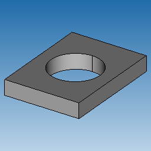
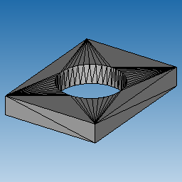
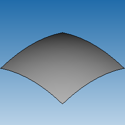
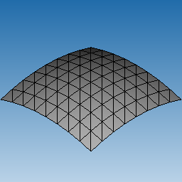
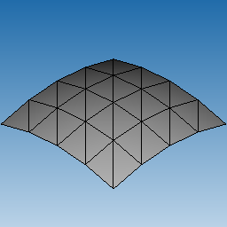
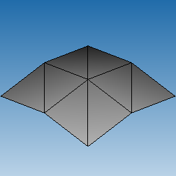

Representations are associated with a part and define its shape.
The following representations are supported:
Each part may have zero or one B-Rep representation and zero, one or several polygonal representations. Representations must be consistent with each other.
The following picture demonstrates the nut part from the assembly as1, with one BRep (as solid body) and one polygonal representation:

B-Rep representation |

Polygonal representation |
A part may have multiple polygonal representations. In this case a part is considered having levels of details (LOD's), i.e. granularity or accuracy of approximation of a part.
By convention, LODs must be sorted from the most accurate (fine) to the least accurate (coarse) representations.
The following example demonstrates a part with one BRep (as a sheet body) and three polygonal representations:

BRep |

Fine LOD |

Medium LOD |

Coarse LOD |
Polygonal representations can be either explicitly created bottom-up or generated from B-Rep with the help of meshers (see Mesh Generation).
The following code snippet demonstrates creation of a part with BRep and two polygonal representations:
Semantics of LOD is application-specific. The data model only provides a mechanism to define multiple polygonal representations.
B-Rep representation contains ModelData_BodyList, which is a list of bodies (ModelData_Body), which define exact part geometry. Each ModelData_Body can be solid, sheet, wireframe or acorn (see ModelData_BodyType enumeration).
Each polygonal representation contains ModelData_PolyShapeList, which is a list of vertex sets. Each vertex set (subclass of ModelData_PolyVertexSet) defines either a set of triangles (ModelData_IndexedTriangleSet), polylines (ModelData_PolyLineSet) or just a point cloud ( ModelData_PolyPointSet).
The part representations can be traversed as follows:
The following examples demonstrate using each approach:
In the above example a respective operator() of MyRepresentationVisitor will be invoked for each representation encountered in the part.